Champions du monde d’échecs
Wilhelm Steinitz (1886–1894)
Devient premier champion du monde officiel en 1886, en battant Johannes Zukertort.
Règne sur le titre jusqu’en 1894, quand il est battu par Emanuel Lasker.
Style positionnel et stratégique, révolutionnaire pour son époque.
Prône la protection du roi, la structure de pions et l’accumulation de petits avantages.
Introduit l’idée que l’attaque doit être justifiée par la position, contrairement au style romantique d’avant (attaques directes et sacrifices spectaculaires).
Considéré comme le fondateur du jeu moderne, ses principes sont encore étudiés aujourd’hui.
Capable de battre ses contemporains grâce à sa compréhension profonde des positions et de la défense.
Père du jeu positionnel moderne, influence directe sur Lasker, Capablanca, et tous les grands champions après lui.
A écrit plusieurs livres et articles théoriques sur les échecs.
Symbole de l’évolution scientifique et stratégique du jeu.
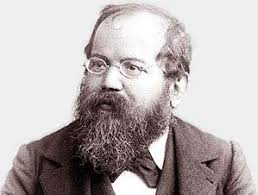
Emanuel Lasker (1894–1921)
Devient champion du monde en 1894, en battant Wilhelm Steinitz.
Reste champion du monde pendant 27 ans (1894–1921), le règne le plus long de l’histoire des échecs.
Perd son titre en 1921 face à José Raúl Capablanca.
Style extrêmement adaptable et stratégique, capable de changer de tactique selon l’adversaire.
Excellent dans la psychologie des parties, souvent capable de pousser ses adversaires à faire des erreurs.
Combinait jeu positionnel et tactique, très complet pour son époque.
Considéré comme quasi invincible pendant son règne, souvent surpassant l’élite mondiale.
Grand innovateur dans les ouvertures et la stratégie générale.
Capacité exceptionnelle à préparer ses adversaires et exploiter leurs faiblesses.
Lasker a été aussi mathématicien et philosophe, appliquant sa logique et sa psychologie aux échecs.
Symbole du champion complet, combinant talent, travail, stratégie et psychologie.
Inspirateur de générations de joueurs pour son analyse stratégique et sa longévité.
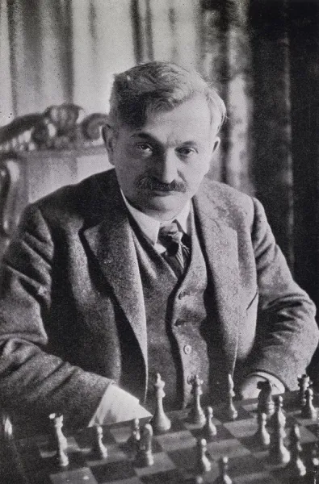
José Raúl Capablanca (1921–1927)
Devient champion du monde en 1921, en battant Emmanuel Lasker.
Perd son titre en 1927 face à Alexander Alekhine.
Premier champion du monde latino-américain.
Style fluide, simple et positionnel, presque « naturel ».
Connu pour sa maîtrise des finales et sa capacité à convertir de petits avantages.
Très difficile à battre grâce à son jeu solide et précis, même sans calculs compliqués.
Invaincu dans de nombreux tournois internationaux dans les années 1910–1920.
Grand maître du jeu stratégique et technique, surnommé « l’Human Calculator » pour sa précision.
Considéré comme un des plus grands techniciens et finalistes de l’histoire des échecs.
Symbole de l’élégance et de la simplicité aux échecs.
Inspirateur des joueurs qui privilégient la technique, la précision et la compréhension des positions.
Son style reste un modèle pour l’étude des finales et du jeu positionnel.
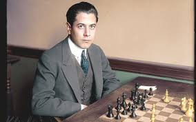
Alexander Alekhine (1927–1935, 1937–1946)
Devient champion du monde en 1927, en battant José Raúl Capablanca.
Perd son titre en 1935 face à Max Euwe, puis le récupère en 1937 et le conserve jusqu’à sa mort en 1946.
Premier champion du monde russe et l’un des plus redoutables de l’entre-deux-guerres.
Style très agressif et combinatoire, capable de créer des attaques spectaculaires.
Excellent dans les sacrifices et les positions tactiques complexes.
Joueur inventif, il pouvait surprendre même les meilleurs avec des idées originales.
Vainqueur de nombreux tournois internationaux prestigieux.
Connu pour sa capacité à jouer rapidement et précisément dans les positions compliquées.
Considéré comme l’un des plus grands calculateurs et créateurs de combinaisons de l’histoire.
Réputé pour son style spectaculaire et offensif, inspirant de nombreux joueurs modernes.
Auteur de livres d’échecs influents sur les combinaisons et la stratégie d’attaque.
Son nom reste associé à l’art de l’attaque aux échecs.
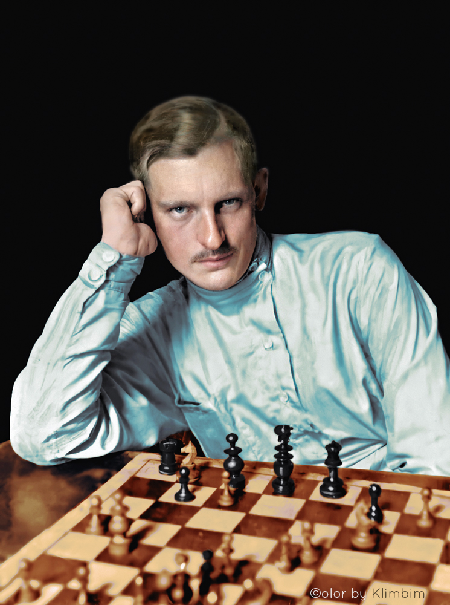
Max Euwe (1935–1937)
Devient champion du monde en 1935, en battant Alexander Alekhine.
Perd son titre en 1937 lors du match revanche contre Alekhine.
Se distingue comme le seul Néerlandais champion du monde.
Style solide et logique, très positionnel, excellent dans la préparation et l’analyse des positions.
Moins spectaculaire que certains de ses contemporains, mais extrêmement précis et méthodique.
Gagne de nombreux tournois internationaux dans les années 1930.
Joueur très consistant et fiable face aux meilleurs de son époque.
Connu pour sa capacité à étudier profondément et à comprendre les positions complexes.
Symbole d’intelligence et de rigueur dans les échecs.
Après sa carrière de joueur, devient président de la FIDE (World Chess Federation) de 1970 à 1978, influençant le développement mondial des échecs.
Max Euwe était un mathématicien , il a étudié les mathématiques et les sciences aux Pays-Bas.
Il a ensuite travaillé comme professeur de mathématiques et était reconnu pour son esprit analytique, ce qui se reflétait dans son approche des échecs.
Sa formation scientifique a fortement contribué à son style logique et méthodique sur l’échiquier.
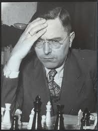
Mikhaïl Botvinnik (1948–1963)
Devient champion du monde en 1948, après le tournoi organisé pour désigner le successeur d’Alekhine.
Perd puis regagne le titre à plusieurs reprises : 1951, 1954 (battu par Smyslov), 1957 (bat Smyslov), puis perd en 1958 contre Smyslov.
Règne sur l’échiquier avec régularité pendant plus de 20 ans, avec plusieurs périodes de champion.
Style scientifique et stratégique, très logique et positionnel.
Excellent en préparation des ouvertures et en jeu technique.
Joueur très rigoureux, méthode basée sur l’analyse et la planification à long terme.
A participé et dominé de nombreux tournois internationaux et matches de championnat.
Connu pour sa discipline et sa constance, rarement pris au dépourvu.
Influence durable sur la théorie des échecs, notamment l’ouverture et le milieu de jeu positionnel.
Fondateur de l’école soviétique des échecs, qui a produit la majorité des champions du monde après lui.
Mentor et entraîneur de nombreux champions : Karpov, Kasparov, Kramnik.
Symbole de l’approche scientifique et méthodique des échecs.
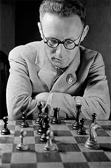
Vassily Smyslov (1957–1958)
Devient champion du monde en 1957, en battant Mikhail Botvinnik.
Perd son titre en 1958 lors du match revanche contre Botvinnik.
Membre de l’école soviétique classique, il a été l’un des meilleurs joueurs des années 1950–1960.
Style positionnel, stratégique et très harmonieux.
Connu pour sa maîtrise des finales et sa capacité à convertir de petits avantages.
Joueur calme et logique, rarement pris au dépourvu.
Multiple participant au Tournoi des candidats et à des championnats du monde.
Considéré comme l’un des meilleurs finalistes de l’histoire, sa régularité et sa technique en ont fait un adversaire redoutable pour tous les grands de son époque.
Modèle de précision et d’art positionnel dans les échecs.
Son approche influence encore les joueurs qui veulent maîtriser les finales et le jeu stratégique.
Symbole de l’élégance soviétique sur l’échiquier.

Mikhaïl Tal (1960–1961)
Devient champion du monde en 1960, en battant Mikhail Botvinnik.
Perd son titre l’année suivante (1961) contre Botvinnik, mais reste un des plus grands génies des échecs.
Premier Letton à devenir champion du monde.
Style ultra-agressif et tactique, basé sur la créativité et les sacrifices.
Capable de créer des combinations impossibles et de gagner des positions apparemment perdues.
Préfère le jeu dynamique et imprévisible plutôt que la stratégie pure.
Surnommé « Magicien de Riga », maître des combinaisons et du jeu spectaculaire.
Invaincu pendant plusieurs années dans les tournois internationaux.
Génie des attaques combinatoires et des parties rapides, connu pour sa capacité à mettre la pression psychologique sur ses adversaires.
Symbole du jeu artistique et spectaculaire aux échecs, inspirateur de nombreuses générations de joueurs qui aiment oser et sacrifier.
Sa créativité et son imagination sur l’échiquier sont encore étudiées aujourd’hui.
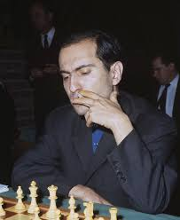
Tigran Petrossian (1963–1969)
Devient champion du monde en 1963, en battant Mikhail Botvinnik.
Perd son titre en 1969 face à Boris Spassky.
Premier Arménien à devenir champion du monde.
Style hyper-solide et prophylactique : il joue pour empêcher l’adversaire de créer des menaces.
Connu pour sa défense presque impénétrable, ce qui lui vaut le surnom de « Mur arménien ».
Moins spectaculaire, mais extrêmement efficace : difficile à battre même pour les plus grands.
Très difficile à battre dans les années 1960, avec une longue série de parties invaincues.
Spécialiste des positions fermées et des finales.
Rival régulier des meilleurs joueurs de son époque : Botvinnik, Tal, Spassky.
Modèle de jeu stratégique et défensif, souvent étudié pour sa technique.
Considéré comme l’un des meilleurs champions du monde pour sa solidité et sa logique positionnelle.
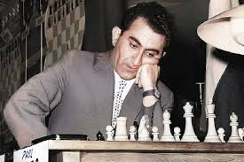
Boris Spassky (1969–1972)
Devient champion du monde en 1969, en battant Tigran Petrosian.
Perd son titre en 1972 face à Bobby Fischer lors du célèbre « match du siècle » à Reykjavik.
Premier Russe à perdre un championnat du monde contre un joueur occidental pendant la Guerre froide.
Très polyvalent, capable d’adapter son style selon l’adversaire, peut jouer positionnel, mais aime surtout les parties équilibrées et élégantes.
Connu pour son jeu harmonieux et clair, souvent qualifié de « classique ».
Plusieurs fois numéro 1 mondial dans les années 1960 et début 1970, vainqueur de nombreux tournois internationaux de haut niveau.
A affronté tous les grands de son époque : Petrosian, Fischer, Karpov, Tal.
Symbole de l’école russe des échecs, mais avec une touche de style « occidental » dans sa créativité.
Connu pour sa courtoisie et son fair-play sur l’échiquier.
Son match contre Fischer est devenu un événement historique mondial, au-delà des échecs.
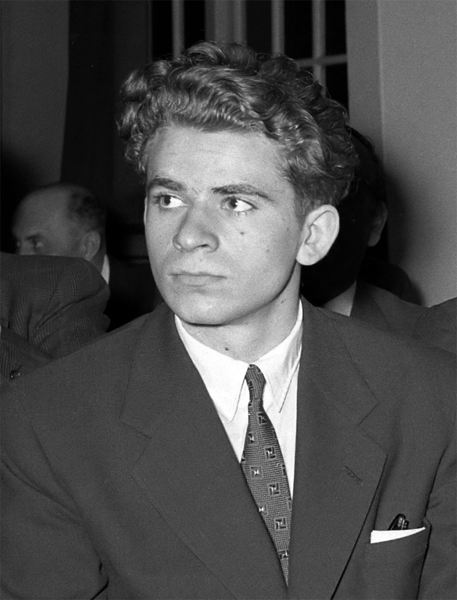
Bobby Fischer (1972–1975)
Il devient champion du monde en 1972 en battant Boris Spassky.
Ce match est surnommé « le match du siècle ».
Il se déroule en pleine Guerre froide : USA 🇺🇸 vs URSS 🇷🇺. Fischer met fin à 24 ans de domination soviétique.
Travail solitaire, sans équipe. Préparation révolutionnaire pour l’époque.
Beaucoup le considèrent comme le plus fort joueur de son époque.
Série légendaire de 20 victoires consécutives contre l’élite mondiale (1970–1971).
Écart Elo énorme avec ses rivaux (du jamais vu à l’époque). Premier joueur à dépasser 2700 Elo.
Il a modernisé : la préparation d’ouverture, l’importance de la précision, l’étude profonde des finales.
Comportement imprévisible, conflits avec la FIDE donc il refuse de défendre son titre en 1975 → perd le titre par forfait
et il s’isole du monde des échecs pendant des années.
Fischer est vu comme: un génie absolu, un symbole de l’individu contre le système et l’un des joueurs les plus influents de tous les temps.
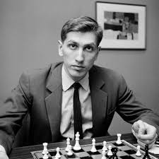
Anatoly Karpov (1975–1985)
Devient champion du monde en 1975, après que Bobby Fischer refuse de défendre son titre.
Reste champion jusqu’en 1985, quand il est battu par Garry Kasparov.
A ensuite disputé plusieurs matchs historiques contre Kasparov (1986, 1987, 1990), très serrés et légendaires.
Style positionnel, patient et stratégique, l’opposé du style tactique de Fischer.
Excelle dans la défense, le contrôle du centre et l’exploitation de petites faiblesses,
capable de gagner sans attaques spectaculaires, grâce à sa précision et sa technique.
Plusieurs fois numéro 1 mondial pendant plus d’une décennie, vainqueur de dizaines de tournois super-élite.
A participé aux championnats FIDE et a dominé la scène mondiale dans les années 1970–1980.
Modèle de jeu positionnel et stratégique pour les générations futures,
considéré comme l’un des meilleurs champions du monde de tous les temps, avec Kasparov et Fischer.
Symbole de discipline et de régularité dans l’élite des échecs.
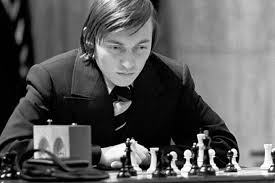
Garry Kasparov (1985–2000)
Il devient champion du monde en 1985, à 22 ans, en battant Anatoly Karpov.
Il reste champion jusqu’en 2000 (15 ans), le règne le plus long de l’ère moderne.
Connu pour ses matchs épiques contre Karpov, symboles de la stratégie et du mental.
Préparation des ouvertures très poussée, souvent révolutionnaire.
Style : agressif, dynamique, cherche la victoire dans toutes les positions.
Maître du calcul combinatoire et des positions complexes.
Elo le plus élevé de tous les temps à son époque : 2851 en 1999 (record historique jusqu’à Carlsen).
A affronté des ordinateurs d’échecs, notamment Deep Blue, marquant l’histoire des échecs contre l’IA.
Meilleur joueur du monde pendant plus de 20 ans.
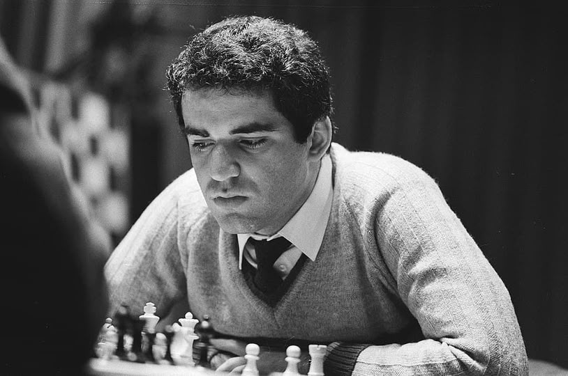
Vladimir Kramnik (2000–2007)
Il devient champion du monde en 2000 en battant Garry Kasparov, mettant fin à 15 ans de règne de Kasparov.
Règne officiel jusqu’en 2007, puis reste une figure dominante jusqu’à sa retraite en 2019.
Connu pour ses victoires contre l’élite mondiale et ses défenses solides.
Style positionnel et stratégique, très précis, expert des défenses solides.
Très difficile à battre, il privilégie la stabilité et la technique plutôt que les attaques spectaculaires.
Plusieurs fois numéro 1 mondial, rival régulier de Kasparov et Anand.
Connu pour sa résistance mentale et sa maîtrise des finales complexes.
Symbole de la nouvelle école russe après Kasparov.
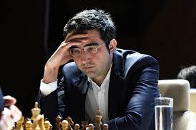
Viswanathan Anand (2007–2013)
Devient champion du monde officiel en 2007, après des victoires dans les tournois du championnat classique et du championnat FIDE.
Premier champion du monde indien, symbole du succès des échecs en Inde.
Style rapide, universel et extrêmement flexible, très bon en attaque, mais aussi solide en positions stratégiques.
L’un des meilleurs joueurs du monde en blitz et parties rapides, surnommé « Lightning Kid » pour sa rapidité de calcul.
Premier Indien à atteindre le top 10 mondial, Grand Maître à 18 ans, prodige précoce.
A joué et battu tous les meilleurs joueurs de sa génération, y compris Kasparov, Kramnik, Carlsen et Topalov.
Ambassadeur des échecs en Inde et dans le monde, modèle de discipline, constance et polyvalence.
Inspire une nouvelle génération de champions indiens comme Gukesh et Rameshbabu Praggnanandhaa.
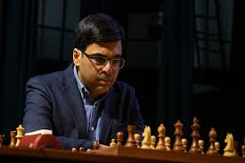
Magnus Carlsen (2013–2023)
Devient champion du monde en 2013, en battant Viswanathan Anand.
Défend son titre jusqu’en 2023, avant de laisser son titre vacant.
Numéro 1 mondial pendant plus de 10 ans consécutifs.
Style universel, flexible et très pragmatique, excellente capacité à transformer de très petits avantages en victoires.
Très fort en finales et positions complexes, mais aussi capable de tactiques et attaques si nécessaire.
Capable de jouer rapide et précis, même sous pression.
Plus haut classement Elo de l’histoire : 2882.
Champion du monde rapid et blitz également, surnommé « roi des parties rapides ».
Invaincu dans de nombreux tournois super-élite.
Symbole de l’excellence moderne et de la domination constante, influence énorme sur la nouvelle génération de joueurs.
Modèle de préparation, endurance et précision dans toutes les phases du jeu.
Son record le plus notable n’est pas seulement des victoires consécutives, mais une série de 125 parties sans perdre en ajedrez classique,
entre le 31 juillet 2018 et le 9 octobre 2020. Pendant cette série, il a obtenu 42 victoires et 83 nulles,
avant de finalement perdre contre Jan-Krzysztof Duda.
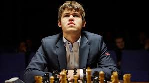
Ding Liren (2023-2024)
Il devient champion du monde en 2023 après avoir battu Ian Nepomniachtchi.
C’est le premier champion du monde chinois de l’histoire.
Sa victoire marque un moment historique pour les échecs en Chine et en Asie.
Très solide, calme, précis, excellente défense et énorme résistance psychologique.
Longtemps invaincu en parties classiques (record à plus de 100 parties),a dépassé les 2800 Elo, un seuil réservé à l’élite mondiale.
Régulièrement dans le Top 5 mondial avant son titre.
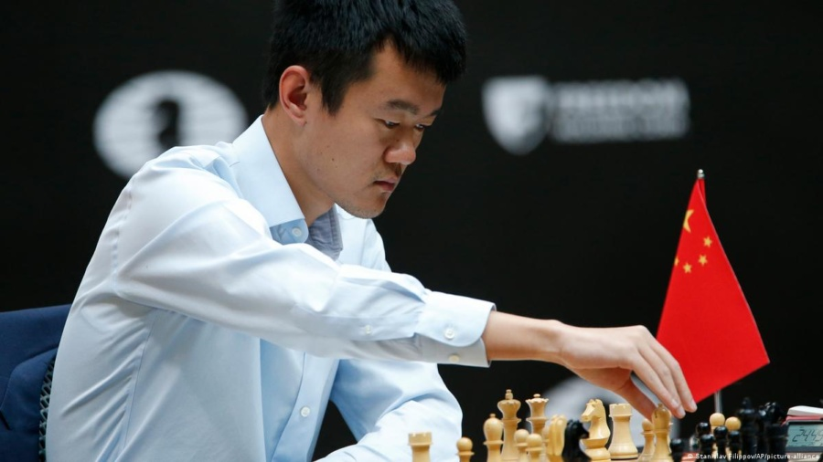
Gukesh D (2024– )
Il devient champion du monde en 2024 en battant Ding Liren.
À 18 ans, il est le plus jeune champion du monde de toute l’histoire, il bat le record de Garry Kasparov.
Talent indien exceptionnel, prodigieux à un âge très jeune, Grand Maître à 12 ans, l’un des plus jeunes de l’histoire.
Successeur direct de Viswanathan Anand, mais avec une nouvelle génération très forte.
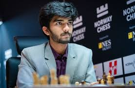